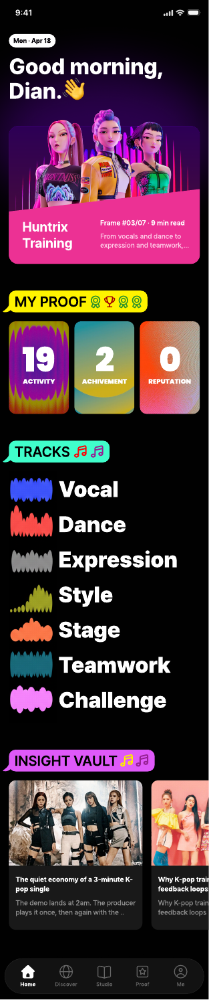
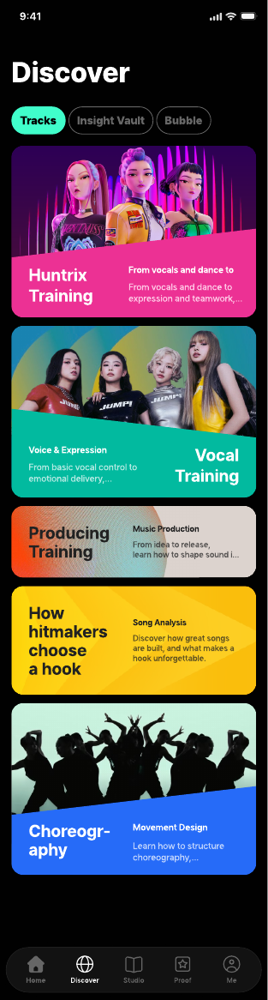
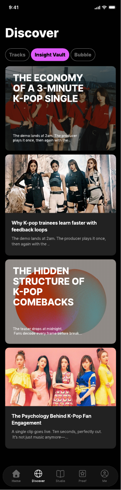
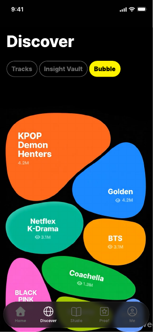
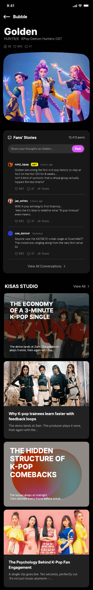
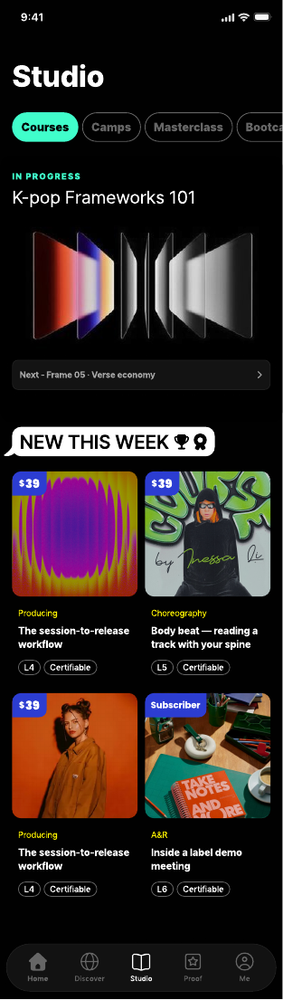
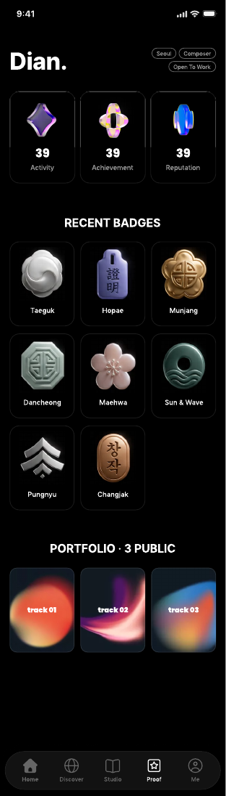
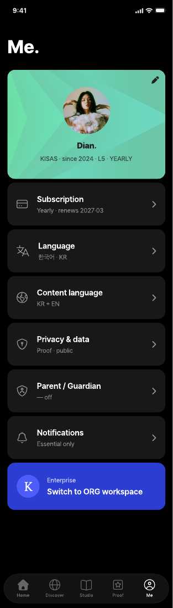
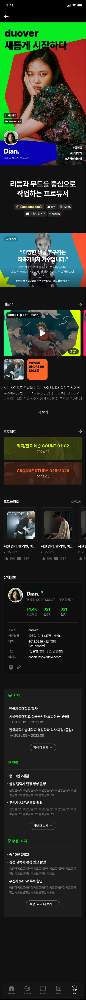

K 창작의 운영체제 — KISAS Platform
K팝·K콘텐츠·K컬처는 지금 소비만 되고 있다.
우리는 그 소비가 플랫폼으로 영속하고, 시장에 기여하고, 선순환하도록 만든다.
현재: 팬덤은 거대하지만 (글로벌 수억 명), 소비에서 멈춘다.
전환: 소비 → 따라하기 → 능력 → 증명 → 기회 → 더 큰 소비.
결과: K는 한 번 소비되고 끝나는 콘텐츠가 아니라, 창작자를 만들어내는 산업이 된다.
K-콘텐츠 = "흥행 콘텐츠"가 아니라 → 글로벌 영향력 시스템 (문화 + 산업 + 국가 전략)
Uber (2009) — "택시 산업에 정면 도전? 규제로 6개월 안에 죽는다." 현재: 시가총액 약 1500억 USD.
Airbnb (2008) — "낯선 사람을 집에 들인다? 무모하다." 현재: 시가총액 약 800억 USD.
TikTok (2016) — "유튜브가 있는데?" 현재: 월 활성 사용자 약 15억 명.
핵심: 새로운 카테고리는 항상 "이건 뭐야?"로 시작한다. KISAS도 마찬가지다.
교육 ✗ · 매거진 ✗ · 콘텐츠 플랫폼 ✗
K 창작 지식의 글로벌 OS — Operating System
"K 창작의 하버드 비즈니스 리뷰. 그 매거진이 비즈니스 지식으로 한 것을, KISAS는 K 창작 지식으로 한다."
하버드 비즈니스 리뷰가 단순 매거진이 아니라 구독 · 기업 교육 · 케이스 · 라이선싱의 다층 엔진이듯, KISAS도 외형이 아니라 엔진을 따라간다.
운영체제 = 진입(Play) · 학습(Skill) · 증명(Proof) · 시장(Opportunity)이 한 위에서 돌아가는 것.
맞다
맞다
맞다
→ 경제 ✗ → 오래 못 간다
학술의 루프: 연구 → 논문 → 인용 → 더 깊은 연구 = 재미는 동료에게만, 대중은 초대받지 못한 파티.
놀이의 루프: 재미 → 따라하기 → 확산 → 더 큰 재미 = 대중이 스스로 키우는 시장.
학술은 현실을 설명하지만, 놀이는 현실을 만든다.
그냥 즐긴다
크리에이터 지망
프로·산업 플레이어
출처 · Jakob Nielsen, "Participation Inequality" (닐슨 노먼 그룹, 2006) — 1% Rule
Roblox — 유저가 콘텐츠 제작 → 따라함이 시작점.
YouTube — 아마추어 → 프로 전환의 표준 경로.
TikTok — 따라하기 → 확산 → 스타 탄생.
핵심: "재밌어서 시작 → 점점 생산으로 이동" — 모든 거대 플랫폼의 공통 경로.
90 : 9 : 1 비율은 Jakob Nielsen (닐슨 노먼 그룹, 2006)의 "Participation Inequality / 1% Rule"에서 온 온라인 커뮤니티 경험칙. K 팬덤 실증치가 아닌 업계 통용 참조값으로 사용.
댄스 챌린지 · AI 커버 · 밈 재현. 보상은 즉각, 진입은 가볍게.
더 큰 무대, 더 큰 시장, 더 큰 인정. 자연스럽게 시장을 키운다.
대중은 이미 따라하고 있다
창작자는 이미 더 큰 무대를 원한다
대중 800억 뷰는 공기처럼 흐르고, 창작자 2억 명은 증명을 기다린다. 두 욕구가 한 위에서 만나면 — 그게 시장이다.
출처 · TikTok for Business · IFPI / Luminate Music 360 · Grand View Research · Goldman Sachs "Music in the Air" 2024~25
학생으로 대하지 말고, 전문가처럼 만들게 하지 말고 — TikTok처럼 시작하게 만들어라.
팬덤·숏폼 따라하기
활동 세트 · 평가 표준 공급
현업·임원 고마진 교육
SaaS로 학교·학원·기업에 공급 · 개인엔 놀이로 진입
위변조 불가 디지털 인증 · 포트폴리오 · 기업·기관 매칭
개인 루트 — 팬이 놀이로 따라하다가 인증을 딴다. 학원을 안 다녔어도 같은 기준으로 증명된다.
SaaS 루트 — KISAS가 활동 세트·평가 표준을 학교·학원에 SaaS로 공급한다. 거기서 따는 인증도 플랫폼 인증과 동일하다.
기업·기관 루트 — 프로 교육 수료도 같은 허브로 수렴. 이게 HBR이 "구독 + 교육 + 케이스 + 라이선싱"을 같은 매거진 권위 위에 올린 방식.
진입은 다르되, 증명은 하나 — 이게 OS다. 놀이와 SaaS가 다른 상품처럼 흩어지면 플랫폼이 아니라 백화점이 된다.
수요는 쌓였고, 공급은 비었고, 타이밍은 열렸다.
10년 전 대비 18배 · 8개 권역 전부 성장
기존 교육 매거진 = 임원만 · 팬 서비스 = 놀이까지만 · 연결 ✗
McKinsey 2024 · LinkedIn Workplace Learning 2025
2026 해외 한류 실태조사 + IFPI 2024·25
① 수요 — 2.25억 K 팬덤
② 공백 — 아무도 "어린이 ~ 해외 기관"을 한 줄로 잇지 못함
③ 타이밍 — 왜 지금인가
④ 확신도 종합 (V2 Appendix)
수요 2.25억 · 어린이부터 해외 기관까지 통째 공백 · 타이밍 92% — 세 숫자가 같은 방향을 가리킨다. 그래서 "이미 기다리고 있다"다.
월 구독자 180만 명. 인니·태국·한국 3개국 대중 입구. 트래픽 엔진.
기획사 3사 정식 채택 · 연습생 트랙 32개. Core 매출 엔진.
케이스북 12종 누적 8만 부. 대학·기업 교육 공용.
MENA·동남아 17개교 연간 라이선스. 반복 매출.
※ 2028년 4월 목표 시나리오 · 2026.04 현재 1기 캠프 60명 진행 중 (디안·연습생 등은 예시)
하버드 비즈니스 리뷰는 매거진으로 시작했지만, 실제 엔진은 구독 + 기업 교육 + 케이스 + 라이선싱의 4층이다.
KISAS는 외형(매거진)이 아닌 엔진(4층 수익 구조)을 따라간다.
일반 팬층 = 트래픽 엔진(매출 ✗) · 프로·임원·해외 기관 = 매출 엔진. "K팬 많으니 구독 잘 팔림"이 가장 큰 착각.
2028 스냅샷 진행 경로 — 2026 1기 캠프 60명 → 2026~27 구독 MVP → 2027 프로 과정 → 2027~28 기업 교육 → 2028~ 라이선싱. 4층 전부 살아있는 첫 해가 2028.
— KISAS Platform Manifesto · 2026
이제, 그 OS를 보여드립니다.
매니페스토의 모든 문장이 — 화면이 된다.
Home · 진입의 첫 화면

Discover · Tracks

Discover · Insight Vault

Discover · Bubble → Golden (탭 동작)


Studio · Camps · Masterclass · Bootcamp

Proof · 뱃지 · 포트폴리오 · 평판

Me · ORG workspace · Profile


Talent is everywhere. Proof is not.
기회는 재능이 아니라, 증명 방식에 의해 결정된다. 우리는 그 방식을 바꾼다.